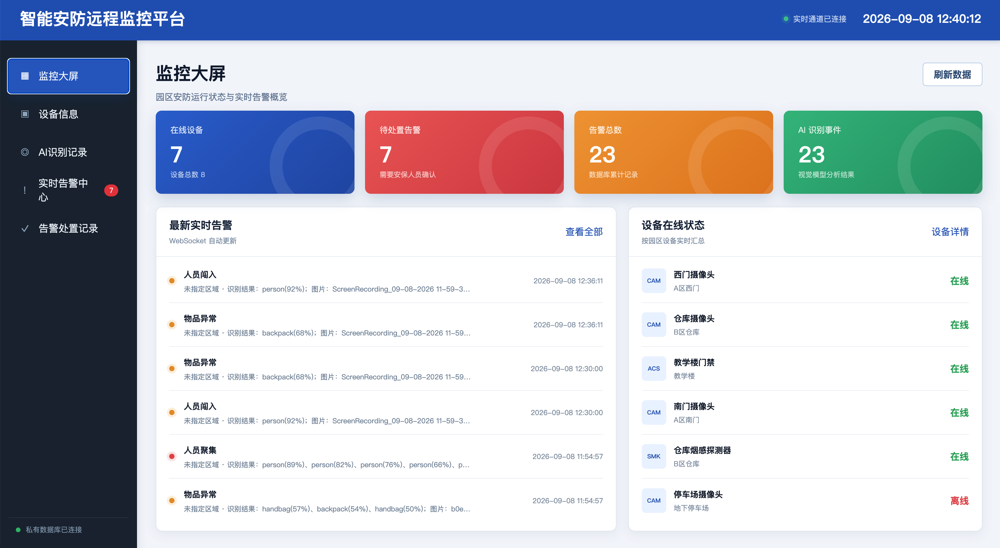
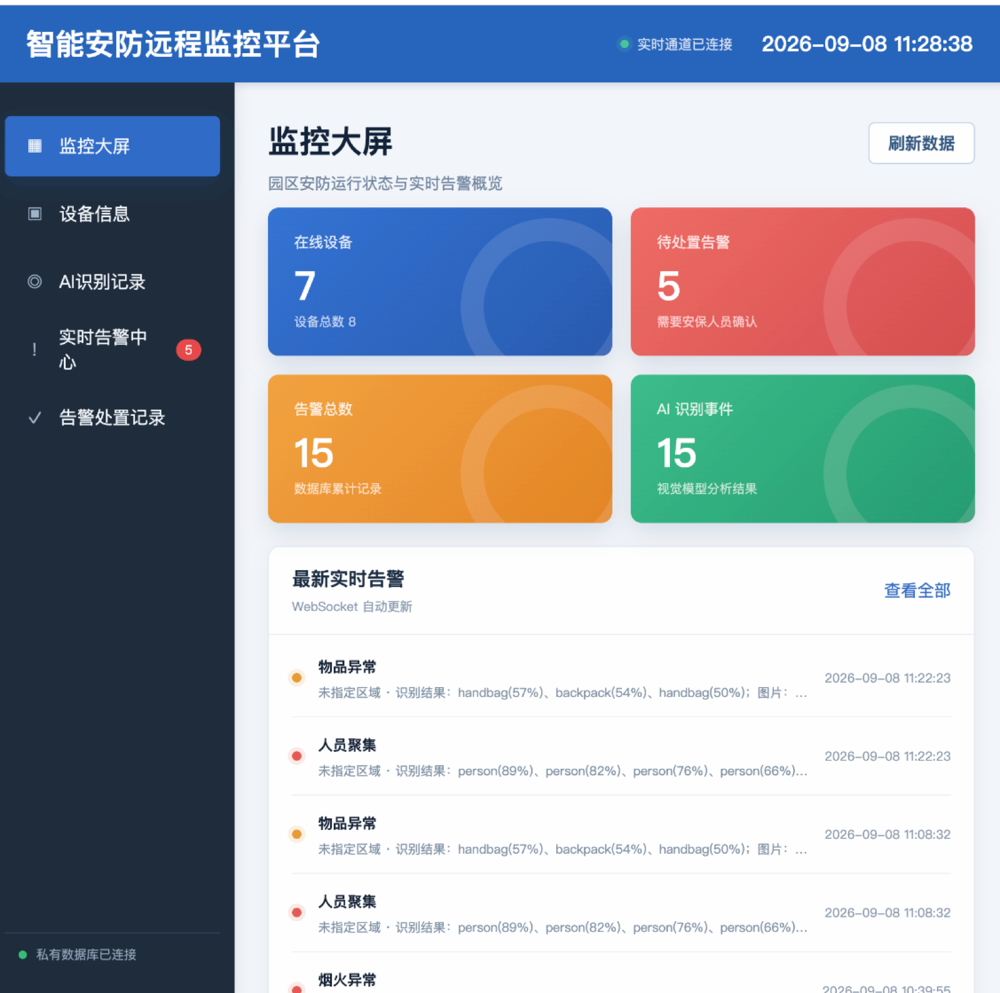
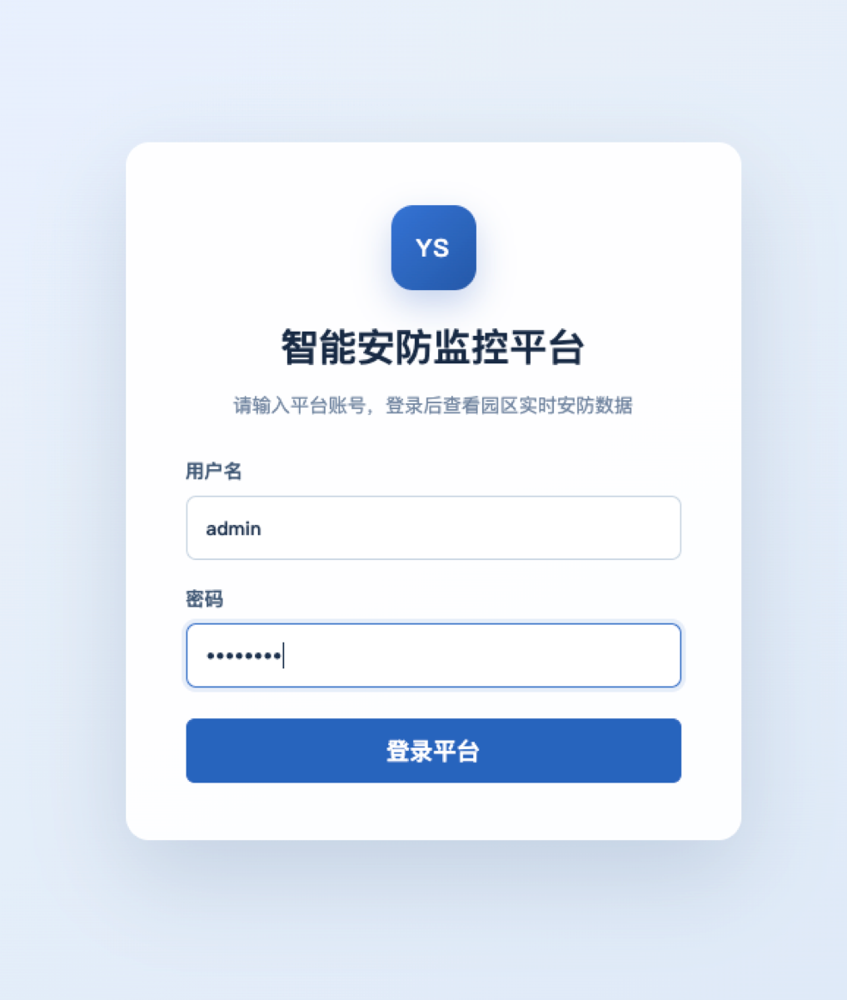
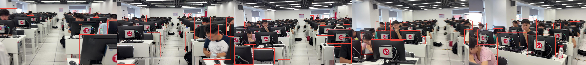

Analyse image et vidéo
Images réseau, téléversements et trames vidéo échantillonnées, réunies dans un événement cohérent.
Un projet de cours de surveillance. FastAPI et YOLOv5 analysent images et vidéos ; Spring Boot transforme les résultats en alertes, les enregistre dans MySQL et diffuse les mises à jour par WebSocket aux clients Web et HarmonyOS.

L’interface d’administration comprend un tableau de surveillance et une page de connexion, servis par Spring Boot.


De ce que le modèle voit à la clôture de l'incident, chaque étape conserve son état et ses preuves visuelles.
Images réseau, téléversements et trames vidéo échantillonnées, réunies dans un événement cohérent.
Les modèles COCO et feu/fumée couvrent personnes, véhicules, objets, animaux, fumée et flammes.
Les classes détectées deviennent des alertes d'intrusion, foule, incendie, véhicule ou objet.
Les événements WebSocket partent après validation de la transaction pour garder les écrans cohérents.
Les alertes passent de « à traiter » à « en cours », puis « clôturée », avec validation des transitions.
Les détections annotées et planches de trames restent liées à leurs alertes.
Les soumissions manuelles et le dossier ai-watch empruntent la même chaîne métier.
URL, fichier ou image/vidéo surveillée.
Inférence, annotation et agrégation.
Mapping, validation et transactions.
Appareils, alertes, états et preuves.
Événements envoyés aux consoles connectées.
L'opérateur peut revoir les cadres à l'origine de l'alerte.

Le client associe ArkWeb, interaction sensible au terminal et partage natif.
Connexion par adresse locale, navigation, progression de chargement et session de démonstration.
Le bouton flottant s'adapte à une tenue main gauche ou main droite.
Le partage tactile et les gestes aériens transmettent une session contrôlée aux appareils proches.
Un ensemble coordonné pour le navigateur, le métier, la vision, les données et le terminal.